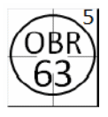
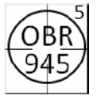
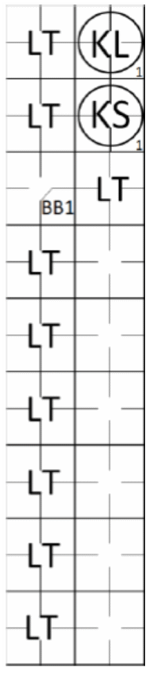

action { batter -> OBR5-63 }

When a batter fails to step up to the plate and another batter in the batting order completes his turn at bat, this batter is batting out of turn, and the opposing team is entitled to appeal. It should be noted that if the opposing team fails to appeal, the improper batter becomes a proper batter and the results of his time at bat become legal [OBR 6.03(b)].
Each time an improper batter appears in the batter’s box, the following consequences are possible:
No one notices, in which case, regardless of the outcome of the turn at bat, after a play, an attempted play or the first pitch is made to the next batter, the improper batter becomes the proper batter.
The offensive team realizes the error while the improper batter is in the batter’s box, and therefore sends the proper batter to take his place [OBR 6.03(b)(2)].
After the improper batter has completed his turn at bat, the opposing team appeals before the first pitch is made to the next batter; the proper batter is declared out and the next batter is the batter whose name follows that of the proper batter who has been called out [OBR6.03(b)(3)].
Batting out of turn is noted on the score report with “OBR - 5” in the case that the appeal is sustained and “LT” (Lost Turn) in the event that the incident went unnoticed.
It should be noted that, regardless of the outcome of the improper batter’s turn at bat, the scorer should await any further developments before recording the action on the score report, as it is impossible to know until that point who will be considered the proper batter.
NOTE: In the event that the umpire or official scorer realizes that an improper batter is in the batter’s box, they should in no case call the attention of the defense to this fact; it is up to the defensive team to realize the error and act in consequence.
We shall now look at the various situations of batting out of turn and their consequences:
Improper batter who becomes a runner. If an improper batter becomes a runner and, after an appeal by the opposing team, the proper batter is called out, the proper batter is credited with a turn at bat, the putout is credited to the catcher, and all other actions that occurred after the improper batter advanced to first base ignored;
Improper batter who is put out. If an improper batter is put out and as a result of the appeal play by the opposing team the proper batter is also declared out, the proper batter is credited with a turn at bat, and the putout and any assists are credited to the fielders who made the putout during the action that was nullified by the appeal;
Improper batter who has not been put out or who has not yet batted. If an improper batter is in the batter’s box and, before he completes his turn at bat, the offensive team realizes the error or the defense appeals, the proper batter shall take his place and inherits the ball and strike count already accumulated by the improper batter;
Improper batter who becomes a runner or who is put out, and appeal made after the first pitch to the next batter. If an improper batter becomes a runner or is put out, and the defense does not make its appeal until after the first pitch has been made to the next batter, the appeal is rejected, the improper batter becomes the proper batter and the results of his turn at bat become legal.
NOTE: If, while an improper batter is in the batter’s box, a runner advances on a stolen base, balk, wild pitch, passed ball or fielding error, his advance is legal; it will not therefore be annulled by the results of any ensuing appeals.
The next batter after an out-of-turn batter is determined by the following two criteria:
When the proper batter has been put out because he failed to bat in his proper turn, the next batter is the batter immediately after him in the batting order.
When an improper batter becomes the proper batter as a result of no appeal play having been made, or an appeal being made late, the next batter is the batter whose name follows that of the formerly improper batter, who is now the proper batter. It can be seen, therefore, that when the actions of the improper batter are legalized, the batting order resumes, omitting not only the batter who failed to bat in his proper turn, but also all the other batters who appear in the line-up between him and the now proper batter.
NOTE: If, after one or more uncontested irregular turns at bat, the batter who should go to bat is on base, he skips a turn at bat and the next batter in the batting order becomes the proper batter.
To illustrate the various situations that can arise from batting out of turn, let us assume a batting order as follows:
| 1 - Abel | 4 - Daniel | 7 - George |
| 2 - Baker | 5 - Edward | 8 - Hooker |
| 3 - Charles | 6 - Frank | 9 - Irwin |
Example 27:
Abel is the proper batter, but Baker goes to bat and is put out by the first baseman on an assist by the
shortstop.
The defense appeals before the first pitch is made to the next batter and the umpire declares Abel out. Baker
returns to bat as the next batter after Abel.
| WBSC | Translation in the scoring tool | Tool |
|---|---|---|
|
 |
/* Abel is putout for missing his turn at bat. */ action { batter -> OBR5-63 } |
|
Score a turn at bat to Abel and an automatic putout under rule 5. The shortstop is given an assist and the first baseman a putout.
Example 28:
Frank is the proper batter, but Hooker goes to the plate and hits a double to the right field. He is put out
attempting to advance to third base by the third baseman, assisted by the right fielder and second baseman.
The defense appeals before the first pitch is made to the next batter and the umpire calls Frank out. George
goes to bat as the next batter after Frank. Score a turn at bat to Frank and an automatic putout under rule 5.
Credit the second baseman and right fielder with assists and the third baseman with a putout.
| WBSC | Translation in the scoring tool | Tool |
|---|---|---|
|
 |
/* Franck is putout for missing his turn at bat. */ action { batter -> OBR5-945 } |
Example 29:
Daniel is the proper batter, but Edward goes to bat and hits a single.
Frank then goes to bat and with the count at one ball and one strike the defense appeals.
As the defense appealed after the first pitch was made to the next batter, the umpire rejects the appeal. Frank
became the proper batter once the first pitch was made to him.
Score a “LT” (Lost Turn) to Daniel with no turn at bat or plate appearance, and credit Edward with the hit.
| WBSC | Translation in the scoring tool | Tool |
|---|---|---|

|
/* Daniel misses his turn at bat. */ action { batter -> LT } /* frank hits a single in the center field. */ action { batter -> 1B8 } |

|
Example 30:
Frank is the proper batter, but Hooker goes to bat and reaches second base on an error by the right fielder.
The defense appeals before the first pitch is made to the next batter and the umpire declares Frank out.
George goes to bat as the next batter after Frank. Score a turn at bat to Frank and an automatic putout under
rule 5. The putout is credited to the catcher and the error committed by the right fielder is ignored. After George,
Hooker will bat at his proper turn at bat.
| WBSC | Translation in the scoring tool | Tool |
|---|---|---|

|
/* Franck is putout for missing his turn at bat. */ action { batter -> OBR5-2 } |
Example 31: Irwin is the regular batter, but Abel goes to bat. With the count at two balls and one strike the offensive team realizes their error and informs the umpire. Irwin takes his place in the batter’s box and inherits the count of two balls and one strike. As the offensive team noticed the error before the end of the turn at bat the situation returns to normal and the subsequent action is completely transparent in terms of the score report.
Example 32: Charles, as the regular batter, takes his turn at bat and reaches first base on a base on balls. Abel (irregular batter) and Baker go to bat and are both struck out. Once the first pitch had been made to Baker, Abel’s situation became legal. At this point Charles should have gone to bat, but since he is still on first base he is passed over and Daniel becomes the regular batter.
| WBSC | Translation in the scoring tool | Tool |
|---|---|---|
|
 |
/* Batter lost turn */ action { batter -> LT } /* Batter lost turn */ action { batter -> LT } /* Batter advance on 'base on ball' */ action { batter -> BB } /* Batter lost turn */ action { batter -> LT } /* Batter lost turn */ action { batter -> LT } /* Batter lost turn */ action { batter -> LT } /* Batter lost turn */ action { batter -> LT } /* Batter lost turn */ action { batter -> LT } /* Batter lost turn */ action { batter -> LT } /* Batter strikeout looking */ action { batter -> KL } /* Batter strikeout swinging */ action { batter -> KS } /* Batter lost turn */ action { batter -> LT } |

|